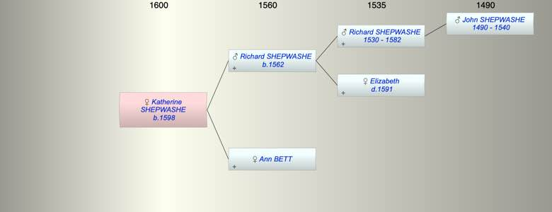

| [Index] |
| Katherine SHEPWASHE (1598 - ) |
|  |
| b. 1598 at Chilham |
| Parents: |
| Richard SHEPWASHE (1562 - ) |
| Ann BETT |
| Siblings (3): |
| Thomas SHEPWASHE (1592 - ) |
| Mary SHEPWASHE (1596 - ) |
| Jone SHEPWASHE (1601 - ) |
| Events in Katherine SHEPWASHE (1598 - )'s life | |||||
| Date | Age | Event | Place | Notes | Src |
| 1598 | Katherine SHEPWASHE was born | Chilham | bap 12 Mar 1598 ex FMP | ||
| Created on a Mac™ using iFamily for Mac™ on 8 Oct 2023 |